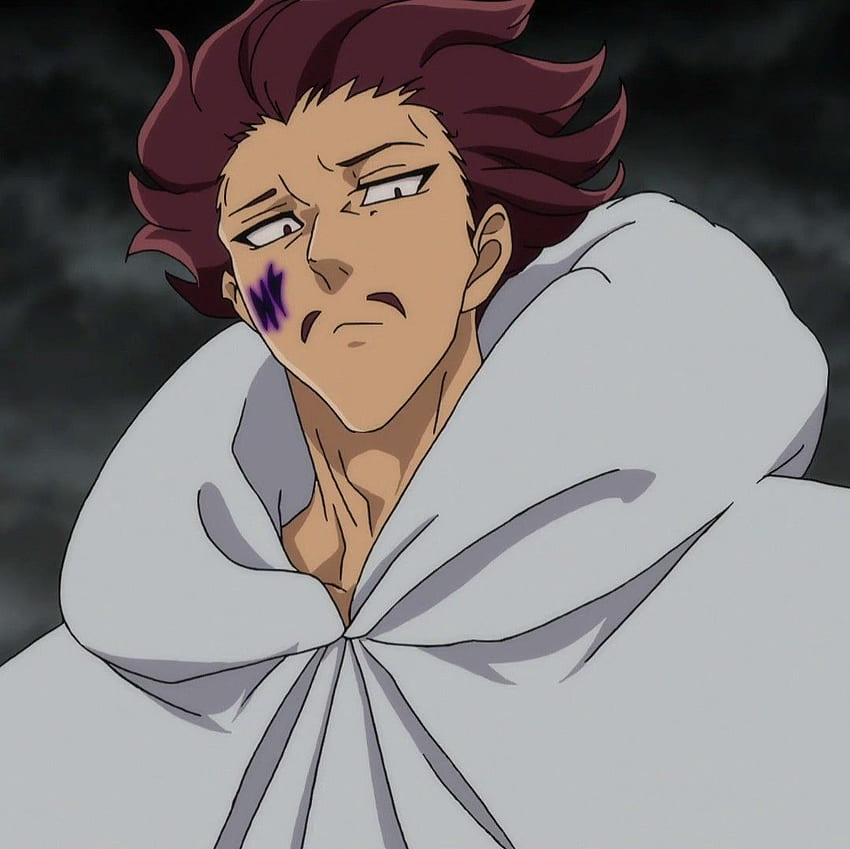
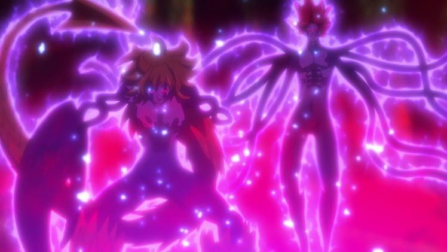

Monspeet
Monspeet「モンスピート」 is an elite warrior of the Demon Clan, serving directly under the Demon King as the Reticence of the Ten Commandments.

Monspeet, also known as Monspeet the Reticence, is one of the Ten Commandments serving directly under the Demon King. Calm and gentlemanly, he always accompanies Derieri on missions and is heavily implied to be in love with her. After he and Derieri were saved by a human girl and nursed back to health he reversed his views on humans and wished to leave the Ten Commandments along with Derieri. Unfortunately, Estarossa interrupted their plans and Monspeet was killed while saving Derieri's life.
Monspeet Ability
